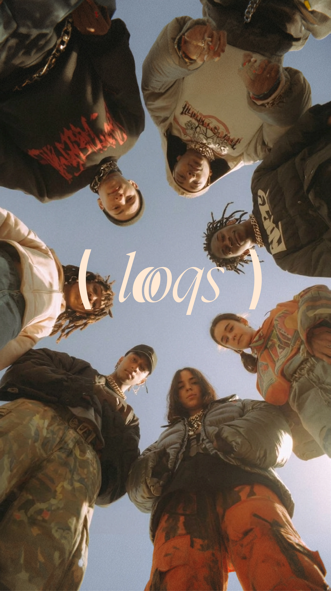
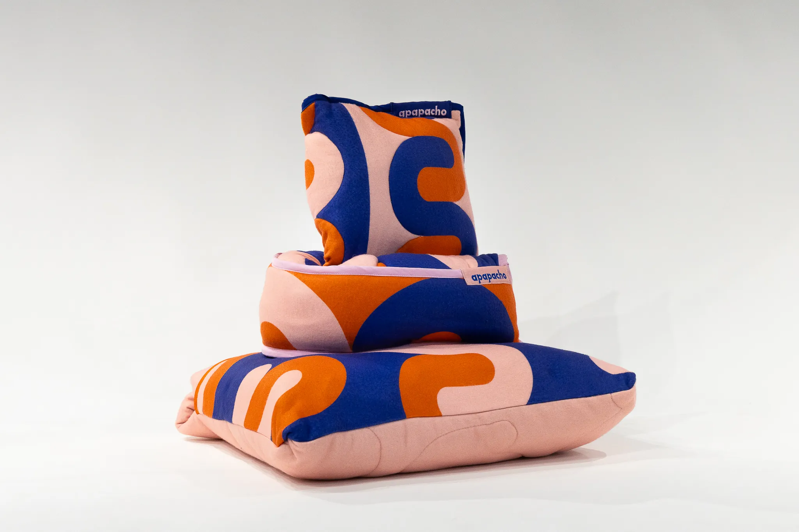
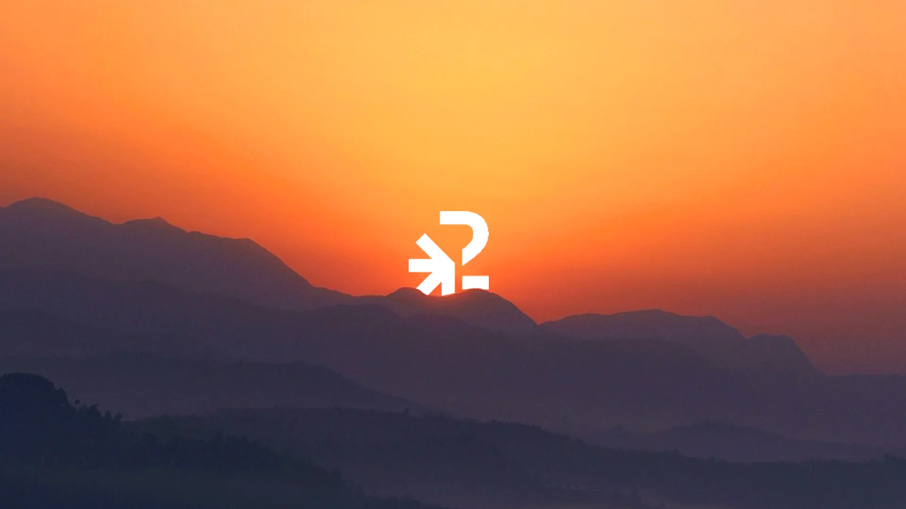
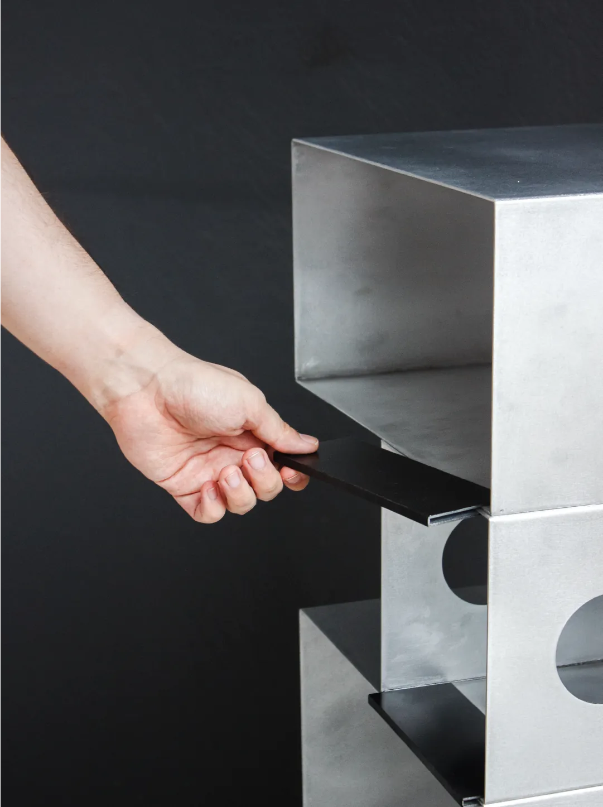

↗ pick up a piece · move it · flip it
A note for the in-between
the worldis stillfull of firsts.
FIELD
NOTES
NO. 001
. .
\|/
|
/ \
/___\
. * .
. \ | / .
--- * ---
. / | \ .
' * '

FRAME 01 · FOUND LIGHTstay curious.Somewhere, something is starting to make sense.
PHOTO STUDY01 / 04

MATERIAL / MEMORYsoft things hold.A little color, a little texture, a reason to stay awhile.
TEXTILE STUDY02 / 04

COLOR TEST · 02:17 AMtry the strange one.The version you almost threw away might be the one.
COLOR TEST03 / 04

STUDIO NOTE · TAKE 04make it real.Ideas are good. Ideas you can touch are better.
STUDIO NOTE04 / 04